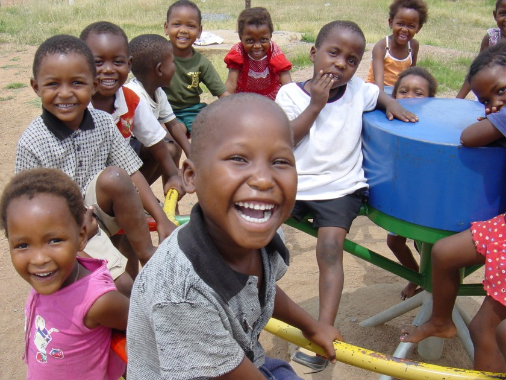
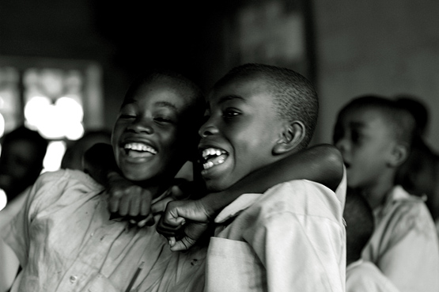
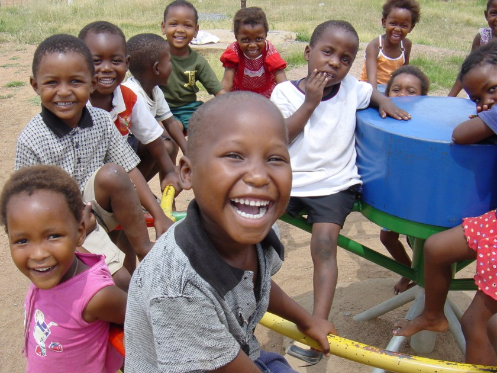
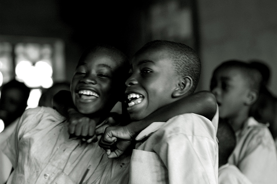

About Us
WatotoKumi Children’s Home is a private, faith-based non-profit organization dedicated to restoring joy to the lives of children from newborn to 18 years of age. Since it was established in 1989, We have been offering safe, caring homes to abused and neglected children. We offer faith-based social services agency fulfilling God's directive to defend the cause of the "weak and fatherless" by providing excellent care and a safe place to call home.